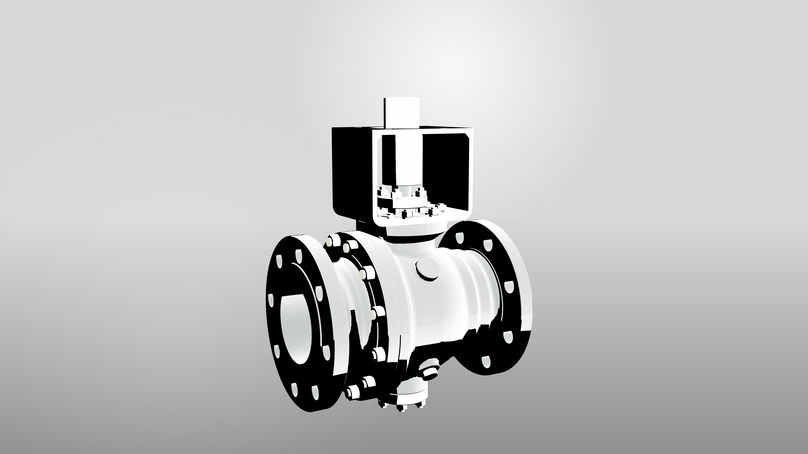
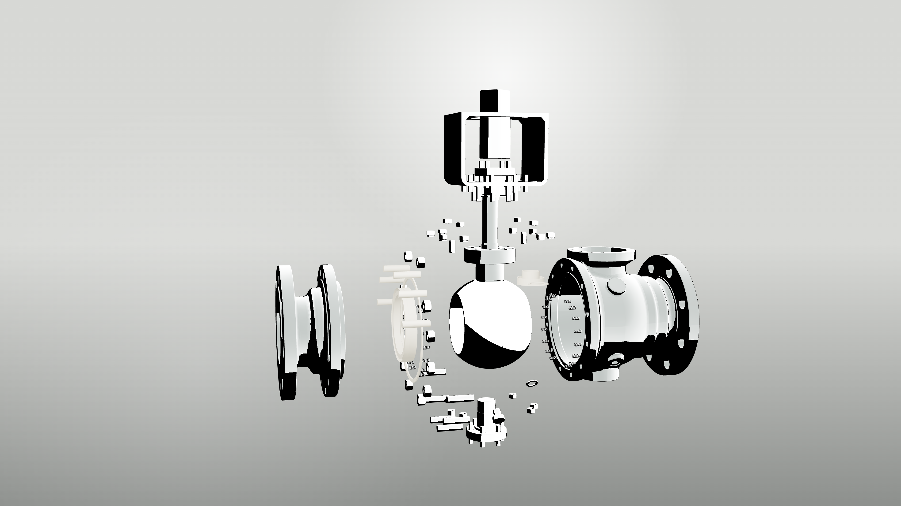
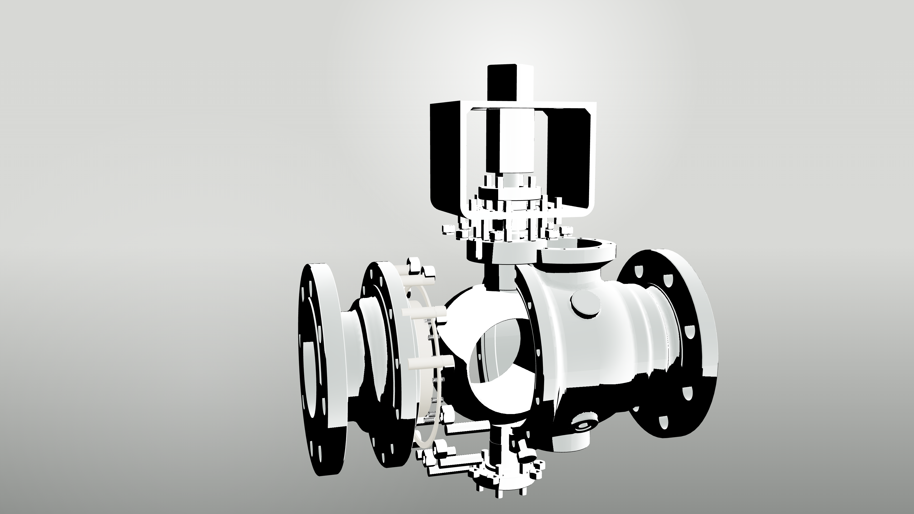
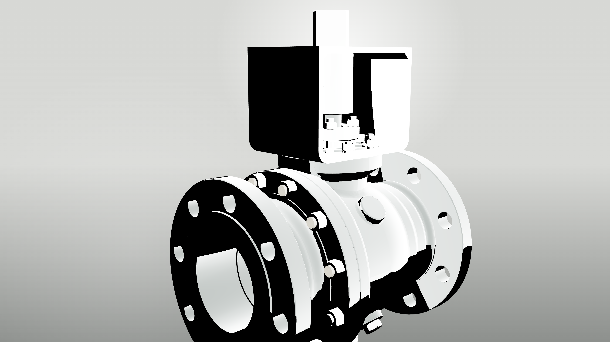
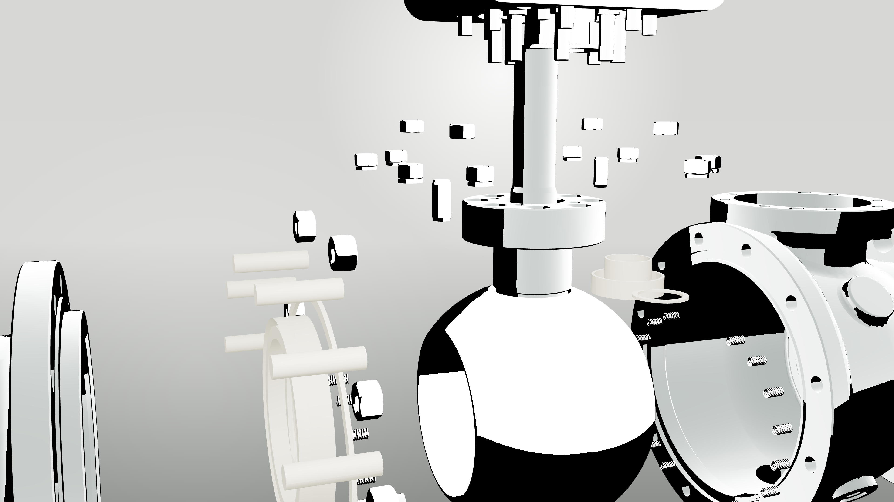

继承
沿用 Goal 16 的 GLB、Three.js 分组和可复用状态。
Goal 19 / Three.js material lookdev
这一版继承 Goal 16 的 GLB、分组和爆炸状态，只做材质、灯光和反射环境升级： 阀体转为喷砂铸造不锈钢，球体转为高亮抛光不锈钢，密封/填料压暗，机加工件和紧固件分层。
fixed-ball-valve.glb




这些名称是视觉材质方向，不在网页文案里声明为认证材质牌号。
Goal 19 是材质闭环，不是最终 240 帧交付。
沿用 Goal 16 的 GLB、Three.js 分组和可复用状态。
重做 PBR 材质、程序纹理和 studio reflection environment。
不接首页，不生成 240 帧，不替代 KeyShot 或 Blender/Cycles。
审阅通过后，再迁移到爆炸首帧到合体的 240 帧动画。